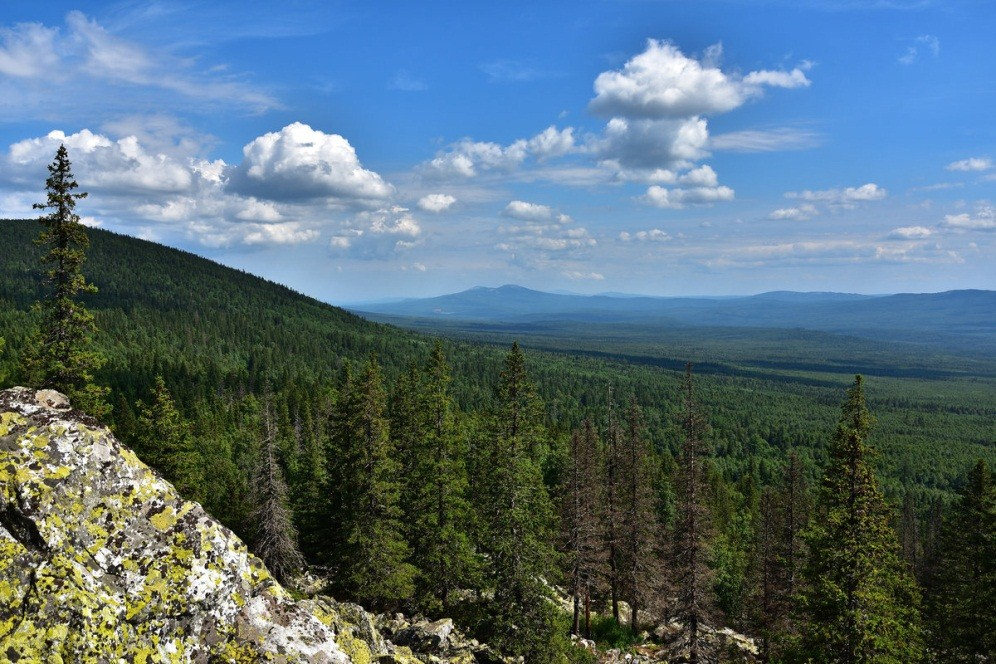

Природа Амурской области

Хинганские горы
Хинганские горы – живописный природный район Амурской области с богатой флорой и фауной. Отличное место для походов и отдыха на природе.

Природный заповедник «Зейский»
Природный заповедник на северо-востоке области. Здесь можно увидеть редких животных, множество птиц и уникальные ландшафты.

Река Зея
Одна из крупнейших рек региона, с живописными берегами, популярная для рыбалки и сплава на байдарках.

Лесные массивы Амурской области
Обширные лесные территории с разнообразной флорой и фауной. Отличное место для экологического туризма и походов.